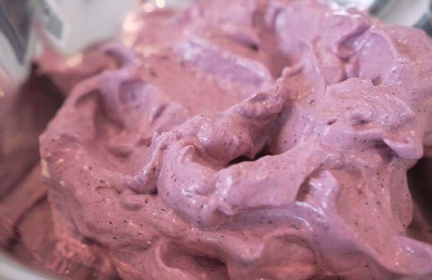

Homepage
Ice Cream of Power

I don't have a cool story about this one. Tried a few times a few years ago, but I haven't used much whey since Myprotein went to shit, so now I just eat my meals like a normal person smh.
By went to shit, I don't mean quality wise (haven't tried since I finished my last bag) but when I bought from them, their big thing was their affordability, now their prices are basically the same as the rest of the industry, hence they don't have an edge as far as I am concerned.
Ingredients:
- 2 scoops vanilla protein powder
- 1 cup unsweetened almond milk
- 1/2 cup frozen mixed berries
- 1/4 cup powdered erythritol
- 1/4 tsp xanthan gum
- Optional: sugar-free syrup for topping
Instructions:
- Combine all ingredients in a blender.
- Blend until smooth and creamy. You may need to stop and scrape down the sides a few times.
- Pour the mixture into a freezer-safe container.
- Freeze for at least 4 hours, or until solid.
- Let it sit at room temperature for a few minutes before scooping.
- Serve and become SWOLE!
I took the recipe from here
This is where I took the recipe from. NGL, I didn't try this one specifically, but it sounds like what I remember from what I did try and it tasted fine, so it should be good enough. The link